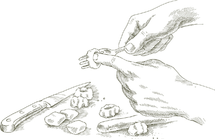

СЛОВО gnocco в итальянском языке означает маленький комок, например, тот, который может возникнуть, если резко ударить головой о твердую поверхность. Однако с гастрономической точки зрения ньокки должны быть чем угодно, только не комковатыми. Будь то картофель, мука из семолины или шпинат с рикорой, как в следующих рецептах, основная характеристика хорошо приготовленных ньокки заключается в том, что они должны быть легкими и воздушными.
ХОРОШИЕ ПОВАРА в Венето, где легкие как облако ньокки являются неотъемлемой частью традиции наряду с кремовым ризотто, неохотно добавляют яйца в картофельное тесто. Некоторые люди используют яйца, потому что тесто становится легче в работе, но этот метод, называемый alla parigina, «парижский стиль», приводит к более жесткому и резиновому продукту.
Выбор картофеля имеет решающее значение. Ни печеный картофель, такой как айдахо, ни любой вид нового картофеля не подходят. Первый слишком мучнистый, а второй слишком влажный, и если вы используете один из них, ньокки скорее всего развалятся во время приготовления. Единственный надежный картофель для ньокки - это более или менее круглый, обычный вид, известный как «варочный» картофель. В Италии, где нет печеного картофеля, а как новый, так и старый картофель относятся к варочному, восковидному виду, вы должны попросить «старый» картофель, если собираетесь готовить ньокки.
На 6 порций
1½ фунта (675 г) вареного картофеля
1½ чашки (180 г) муки высшего сорта без отбеливания
1. Положите картофель в кожуре в кастрюлю с обильным количеством воды и доведите до кипения. Варите до готовности. Избегайте слишком частой проверки, прокалывая их вилкой, так как они могут впитать воду. Когда картофель будет готов, слейте воду и снимите кожуру, пока они горячие. Пропустите их через картофельное пюре и выложите на рабочую поверхность, пока они еще теплые.
2. Добавьте большую часть муки в пюре из картофеля и замесите до получения однородной массы. Некоторые картофели впитывают меньше муки, чем другие, поэтому лучше не добавлять всю муку, пока вы не узнаете, сколько именно им потребуется. Прекратите добавлять муку, когда смесь станет мягкой и гладкой, но все еще слегка липкой.
3. Легко посыпьте рабочую поверхность мукой. Разделите массу картофеля и муки на 2 или более частей и сформируйте каждую из них в колбаску толщиной около 1 дюйма (2.5 см). Нарежьте колбаски на кусочки длиной ¾ дюйма (1.9 см). Во время работы с ньокки постоянно посыпайте руки и рабочую поверхность мукой.
4. Теперь вам нужно сформировать ньокки, чтобы они готовились более равномерно и лучше удерживали соус. Возьмите обеденную вилку с длинными, тонкими зубцами, округлыми, если возможно. Работая над столом, держите вилку более или менее параллельно столу, с вогнутой стороной, обращенной к вам.

Указательным пальцем другой руки прижмите один из нарезанных кусочков к внутренней стороне вилки, чуть ниже кончиков зубцов. В то же время, прижимая кусочек к зубцам, переверните его от кончиков в сторону ручки вилки. Движение пальца - это переворот, а не перетаскивание. Когда кусочек откатывается от зубцов, позвольте ему упасть на стол. Если вы делаете это правильно, у него будут бороздки с одной стороны, образованные зубцами, и углубление с другой стороны, образованное кончиком вашего пальца. Когда ньокки сформированы таким образом, средняя часть становится тоньше и становится более нежной при приготовлении, в то время как бороздки становятся канавками для удержания соуса.
5. Выберите, если возможно, широкую сковороду объемом около 6 квартов (5.7 литра) и диаметром примерно 12 дюймов (30 см). Чем шире, тем лучше, потому что она сможет вместить больше ньокки за один раз. Налейте около 4 квартов (3.8 литра) воды, доведите до кипения и добавьте соль. Прежде чем опустить всю первую партию ньокки, бросьте всего 2 или 3. Через десять секунд после того, как они всплывут на поверхность, достаньте их и попробуйте. Если вкус слишком мучнистый, добавьте 2 или 3 секунды к времени приготовления; если они почти растворились, уберите 2 или 3 секунды. Опустите в кастрюлю первую полную партию ньокки, около 2 дюжин. Вскоре они всплывут на поверхность. Дайте им готовиться 10 секунд, или больше, или меньше, в зависимости от того, сколько времени вы определили, затем достаньте их с помощью шумовки или большой ложки с отверстиями и перенесите на теплое блюдо для подачи. Полейте сверху немного соуса, который вы используете, и легкой посыпкой тертого пармезана. Опустите еще ньокки в кастрюлю и повторите всю операцию. Когда все ньокки будут готовы, вылейте оставшийся соус на них и добавьте еще тертого пармезана, быстро перемешайте деревянной ложкой, чтобы хорошо их покрыть, и подавайте немедленно.
Рекомендуемый соус  Ньокки хорошо сочетаются со многими соусами, но три особенно удачных варианта это Томатный соус с луком и сливочным маслом; Песто; и Соус Горгонзола.
Ньокки хорошо сочетаются со многими соусами, но три особенно удачных варианта это Томатный соус с луком и сливочным маслом; Песто; и Соус Горгонзола.
Примечание Если картофель, с которым вы работаете, дает тесто для ньокки, которое растворяется или распадается при варке, вам нужно добавить 1 целое яйцо в картофельное пюре.
КОГДА ВЫ ЕДИТЕ ньокки со шпинатом и рикоттой по рецепту, приведенному ниже, это напомнит вам начинку из тортеллони со шпинатом или мангольдом без пасты вокруг. Как покажут следующие инструкции, их можно подавать как картофельные ньокки, или как суповые клецки, или запеченные, как ньокки из манной крупы.
На 4 порции
1 фунт (450 г) свежего шпината ИЛИ 1 упаковка (280 г) замороженного листового шпината, размороженного
2 столовые ложки сливочного масла
1 столовая ложка лука, очень мелко нарезанного
2 столовые ложки нарезанного прошутто ИЛИ для более мягкого вкуса, вареной не копченой ветчины
Соль
¾ чашки свежей рикотты
⅔ чашки универсальной муки
2 желтка
1 чашка свеженатертого сыра пармиджано-реджано, плюс дополнительный сыр на столе
Целая мускатная орех
1. Если используете свежий шпинат: Замочите его в нескольких сменах воды и готовьте с солью до мягкости, как описано. Слейте воду, и как только шпинат остынет до температуры, удобной для работы, аккуратно отожмите его в руках, чтобы удалить как можно больше влаги, нарежьте довольно крупно и отложите в сторону.
Если используете размороженный замороженный шпинат: Готовьте в закрытой сковороде с солью около 5 минут. Слейте воду, когда остынет, отожмите всю влагу, которую сможете, и нарежьте крупно.
2. Положите масло и лук в небольшую сковороду и включите средний огонь. Готовьте и помешивайте лук, пока он не станет светло-золотистым, затем добавьте нарезанный прошутто или ветчину. Готовьте всего несколько секунд, достаточно, чтобы перемешать 2 или 3 раза и хорошо покрыть мясо.
3. Добавьте приготовленный, нарезанный шпинат и немного соли, и готовьте около 5 минут, часто помешивая.
4. Вылейте все содержимое сковороды в миску, и когда шпинат остынет до комнатной температуры, добавьте рикорту и муку, и перемешайте деревянной ложкой, тщательно смешивая ингредиенты. Добавьте яичные желтки, тертый пармезан и небольшую терку — около ⅛ чайной ложки — мускатного ореха, и перемешайте ложкой, пока все ингредиенты не объединятся. Попробуйте и при необходимости добавьте соль.
5. Сформируйте небольшие шарики из смеси, быстро скатывая их в ладони. В идеале они не должны быть больше ½ дюйма (1.25 см) в диаметре, но если вам трудно сделать их такими маленькими, можно попробовать ¾ дюйма (2 см). Чем меньше, тем лучше, потому что они готовятся быстрее и лучше распределяют соус. Если смесь прилипает к ладоням, слегка посыпьте руки мукой.
6. Если подаете с соусом: Опустите ньокки, по несколько штук, в 4-5 кварты кипящей подсоленной воды. Когда вода снова закипит, готовьте 3-4 минуты, затем извлеките их с помощью дуршлага или большой шумовки и перенесите на теплое блюдо. Полейте их немного соусом, который вы используете. Опустите еще ньокки в кастрюлю и повторите всю операцию. Когда все ньокки будут готовы, полейте их оставшимся соусом, быстро перемешайте, чтобы хорошо покрыть, и подавайте сразу же, с тертым пармезаном на стороне.
Если подаете в супе: Доведите до кипения 2 кварты основного домашнего мясного бульона, приготовленного как указано. Опустите все ньокки и готовьте 3-4 минуты после того, как бульон снова закипит. Разлейте по суповым тарелкам и подавайте с тертым пармезаном на стороне. Когда подаются в супе, ньокки становятся более сытными, и вышеуказанный рецепт должен дать 6 удовлетворительных порций.
Рекомендуемый соус Томатный соус с тяжелыми сливками может быть самым привлекательным как по вкусу, так и по внешнему виду; еще одно отличное сочетание — с соусом из масла и шалфея. Ньокки со шпинатом и рикоттой вкусны как суповые клецки, подаваемые в основном домашнем мясном бульоне.

На 4 порции
1. Разогрейте духовку до 190°C (375°F).
2. Обильно намажьте форму для запекания сливочным маслом.
3. Опускайте гноччи по нескольку штук в 4–5 кварты кипящей подсоленной воды. Когда вода снова закипит, варите 2 или 3 минуты, затем извлеките их с помощью дуршлага или большой шумовки и перенесите в форму для запекания. Опустите еще гноччи в кастрюлю и повторите описанную выше процедуру, пока все гноччи не будут приготовлены и помещены в форму.
4. Растопите 3 столовые ложки сливочного масла в небольшой кастрюле и полейте им гноччи, равномерно распределяя. Посыпьте ½ чашкой тертого пармезана сверху.
5. Запекайте на верхней полке разогретой духовки, пока сыр не расплавится, около 5 минут. Выньте из духовки и дайте постоять несколько минут, затем подавайте на стол прямо из формы для запекания с тертым пармезаном сбоку.

ТЕСТО для гноччи из семолины, которые в Италии часто называют гноччи алла романа, использует желтую, грубо молотую муку из твердой или дурум пшеницы.
Проблема, с которой сталкиваются некоторые повара при приготовлении гноччи из семолины, заключается в том, что во время запекания тесто сливается и теряет форму. Это обычно происходит из-за того, что оно не готовилось достаточно долго с молоком. Я обнаружила, что тесто требует как минимум 15 минут готовки и помешивания, чтобы приобрести и затем сохранить необходимую консистенцию.
На 6 порций
1 кварта молока
1 чашка семолины, грубо молотой желтой муки из твердой пшеницы
1 чашка свеженатертого сыра пармиджано-реджано
Соль
3 яичных желтка, слегка взбитых в блюдце
2 столовые ложки сливочного масла
Форма для запекания, которую можно подавать на стол, и масло для ее смазывания
¼ фунта прошутто ИЛИ бекона ИЛИ вареной ветчины, нарезанной на мелкие полоски
1. Положите молоко в кастрюлю с толстым дном и включите средний огонь. Если возможно, поставьте под кастрюлю рассеивающее тепло. Когда молоко образует кольцо из мелких перламутровых пузырьков, но прежде чем закипит, уменьшите огонь до минимального, и добавьте муку семолины, высыпая её из сжатого кулака очень тонкой, медленной струйкой и, держа венчик в другой руке, взбивайте её в молоко.
2. Когда вся семолина окажется в кастрюле, перемешайте её длинной деревянной ложкой. Постоянно и тщательно помешивайте, поднимая смесь с дна и оттирая её от стенок кастрюли. Будьте готовы к некоторому сопротивлению, так как смесь из муки и молока быстро становится очень густой. Через чуть более 15 минут и менее 20, смесь образует массу, которая легко отходит от стенок кастрюли.
3. Снимите с огня, дайте немного остыть, примерно минуту, затем добавьте две трети тертого пармезана, 2 чайные ложки соли, яичные желтки и 2 столовые ложки масла в тесто. Смешивайте немедленно и быстро, чтобы яичные желтки не свернулись.
4. Увлажните ламинированную или мраморную поверхность холодной водой и выложите тесто для ньокки на неё, используя лопатку, чтобы распределить его на равномерную толщину около ⅜ дюйма (0.95 см). Периодически окунайте лопатку в холодную воду во время работы. Дайте тесту полностью остыть.
5. Разогрейте духовку до 200°C (400°F).
6. Когда тесто полностью остынет, нарежьте его на диски, используя формочку для печенья диаметром 1½ дюйма (3.8 см) или стакан примерно такого же диаметра. Периодически увлажняйте инструмент в холодной воде во время работы. (Не выбрасывайте обрезки, смотрите примечание ниже.)
7. Легко смажьте дно формы для запекания сливочным маслом. На дне выложите ньокки в один слой, накладывая их друг на друга, как черепицу. Сверху распределите полоски прошутто или бекона или ветчины, посыпьте оставшимся тертым пармезаном и аккуратно добавьте немного сливочного масла. Запекайте на верхней полке разогретой духовки в течение 15 минут, пока не образуется легкая золотистая корочка, а прошутто или бекон или ветчина не станут хрустящими. После извлечения из духовки дайте постоять 5 минут, прежде чем подавать на стол и сервировать прямо из формы для запекания. Если вы заметили, что нижняя сторона ньокки слилась, это совершенно нормально, если верхняя сторона сохраняет свою форму.
Заранее Ньокки из семолины можно полностью подготовить и собрать в форме для запекания за 2 дня до подачи. Плотно накройте пленкой перед тем, как поставить в холодильник. Храните обрезки также в холодильнике в плотно закрытом контейнере.
Смешайте обрезки вместе, быстро сформировав шарик, за день или два до того, как планируете их использовать. Когда будете готовы приготовить оладьи, разделите шарик на кусочки размером с крокеты, добавив щепотку соли и придавая им короткую, пухлую форму с заостренными концами, длиной около 2½ дюймов (6.5 см). Обваляйте их в сухих, безвкусных панировочных сухарях и обжаривайте в горячем растительном масле до образования легкой корочки со всех сторон. Подавайте так же, как крокеты или картофель фри, как будто это гарнир, без соуса.